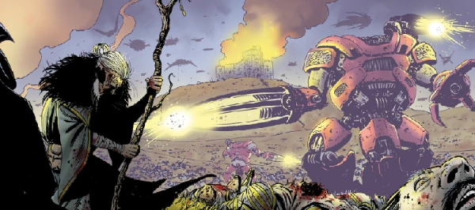

LOTR meets space opera as a wizard, an orc and a dryad take on magic-harvesting alien invaders.
This has an unusual narrative link with Brass Sun, in that a highly-evolved being with god-like powers is represented by a mental manifestation of author Kurt Vonnegut.
Art by Leigh Gallagher
| Story Title | Parts | Pages | w indicates a wraparound coverCovers | Year(s) | Issues | Writer | Artist | Colourist | Letterer |
|---|---|---|---|---|---|---|---|---|---|
| Kingmaker | 12 | 65 | 2015: Leigh Gallagher 1 | 2016-2017 | 2011-2022 | Ian Edginton | Leigh Gallagher | <-- | Ellie de Ville |
| Ouroboros | 12 | 65 | 2123: Leigh Gallagher 1w | 2019 | 2123-2129, 2131-2135 | Ian Edginton | Leigh Gallagher | <-- | Ellie de Ville |
| Falls the Shadow | 12 | 65 | 2266: Leigh Gallagher1 | 2021-2022 | 2262-2267, 2270-2275 | Ian Edginton | Leigh Gallagher | <-- | Jim Campbell |
| >> Teasers << | |||||||||
Thrills of the Future.The Drawing of the Three | 1 | 0.5 | 0 | 2024 | 2387 | n/a | Leigh Gallagher | <-- | n/a |
| year | episodes | pages |
| 2009 | 0 | 0.0 |
| 2010 | 0 | 0.0 |
| 2011 | 0 | 0.0 |
| 2012 | 0 | 0.0 |
| 2013 | 0 | 0.0 |
| 2014 | 0 | 0.0 |
| 2015 | 0 | 0.0 |
| 2016 | 1 | 10.0 |
| 2017 | 11 | 55.0 |
| 2018 | 0 | 0.0 |
| 2019 | 12 | 65.0 |
| 2020 | 0 | 0.0 |
| 2021 | 1 | 10.0 |
| 2022 | 11 | 55.0 |
| 2023 | 0 | 0 |
| 2024 | 0 | 0 |
| 2025 | 0 | 0 |
| 2026 | 0 | 0 |
| 2027 | 0 | 0 |
| 2028 | 0 | 0 |
| 2029 | 0 | 0 |